UDN
Search public documentation:
CapturingCinematicsAndGameplayCH
English Translation
日本語訳
한국어
Interested in the Unreal Engine?
Visit the Unreal Technology site.
Looking for jobs and company info?
Check out the Epic games site.
Questions about support via UDN?
Contact the UDN Staff
日本語訳
한국어
Interested in the Unreal Engine?
Visit the Unreal Technology site.
Looking for jobs and company info?
Check out the Epic games site.
Questions about support via UDN?
Contact the UDN Staff
捕获过场动画和游戏性
概述
渲染帧
捕获帧
在虚幻引擎中捕获单独的帧其实就是简单地在运行游戏时使用正确的命令行参数组合进行操作。引擎具有强制使得游戏按照给定的帧频率运行的能力，并会把每个渲染的帧作为未压缩的.BMP图像输出。把这个功能和命令结合到一起来设置分辨率并指定在启动时要运行的特定地图，并且您能以非常高的分辨率从您的游戏中渲染出镜头片段，同时游戏可以平滑地运行。 为了强制游戏运行特定的地图，您需要把地图的名称传入到可执行文件中。如果您正在捕获一个过场动画序列或者您正打算在使用期望的分辨率进行渲染的同时使用比您的系统可以提供的分辨率更高的分辨率进行捕获视频，那么您也应该在关卡开始时设置您想捕获的事件序列自动运行。比如，如果您有一个地图UDN_FeaturesDemo.udk，它包含了您想捕获的过场动画序列，您将可以使用以下命令来运行它：UDK.exe UDN_FeaturesDemo在这过程中使用的命令行参数?是：
- ResX= - 设置游戏窗口的水平分辨率。
- ResY= - 设置游戏窗口的垂直分辨率。
- BENCHMARK – 为了不跳任何帧来处理每一帧，则以固定步长来运行游戏。当把这个参数和DUMPMOVIE选项结合使用时是非常有用的。
- DUMPMOVIE – 使用当前的分辨率把渲染的帧转存到文件中。
- DUMPMOVIE_TILEDSHOT=X - 与 "DUMPMOVIE" 相似，但是对于分辨率非常高的帧，它会将每一帧截取为一个平铺显示的屏幕截图（文件会非常大，试试看从 2 开始）
- NOTEXTURESTREAMING – 禁用贴图动态载入。总加载最高质量的贴图。
- MAXQUALITYMODE - 无论产生什么性能影响，都强制覆盖某些系统设置来获得最高的质量。
UDK.exe UDN_FeaturesDemo -BENCHMARK -MAXQUALITYMODE -NOTEXTURESTREAMING -DUMPMOVIE -FPS=30 -ResX=1280 -ResY=720您或许会注意到当以这种方式运行游戏时，在序列的开始处或结束处您会获得几帧不需要的帧。这些您不用担心，因为它们是单独的图像文件。当渲染结束后，您可以删除任何您不想要的文件。 最终的图片文件默认位于您的游戏的安装文件夹的Screenshots目录中。对于UDK用户，则位于以下文件夹中：
C:\UDK\UDK-2010-08\UDKGame\ScreenShots您可以在*Engine.ini文件的 [Core.System]部分设置输出路径。比如，UDK的UDKEngine.ini文件中具有：
ScreenShotPath=..\..\UDKGame\ScreenShots这实际是从BaseEngine.ini中设置的通用版本继承而来。如果您想对帧及屏幕截图的输出路径进行永久性修改，那么可以修改BaseEngine.ini中相应的设置。如果想进行临时修改，那么可以修改[您的游戏]Engine.ini文件。 输出的文件命名为MovieFrame*.bmp，这里的 * 是一个五位的数值，用于代表图像中帧的数量。因为文件的命名总是一样的，所以一旦捕获完成后您应该把这些图片移动到新的文件夹中，以便不会混淆它们或者覆盖它们。 警告: 这种方法将需要大量的磁盘空间，因为它处理的是未压缩的文件。根据要捕获的序列的长度的不同，您应该会看到10GB的图像文件及视频文件。
捕获声音
为了捕获音频，您需要使用其中一种实时的捕获方法，不论是软件还是硬件。然后您可以简单地重新第二次播放过场动画来捕获音频。这次游戏是否能够保持同步不再是个问题，因为您可以使用非常小的分辨率来运行游戏，这次仅对音频感兴趣。比如，我们可以使用以下命令行：UDK.exe UDN_FeaturesDemo -ResX=320 -ResY=180有一些应用程序可以简单地仅从您的计算机中捕获音频，Audacity就是这样的程序，在这种情况下使用这样的程序是非常理想的。但是，您也可以使用一般的屏幕捕获程序来录制具有音频的视频文件，然后如果需要则把音频从最终的视频中剥离出来。这里我们使用Audacity作为示例。 首先，确保您安装了Audacity 。您可以从这里下载它。一旦按照好Audacity后，运行该程序。
 从 Edit(编辑) 菜单中打开 Preferences（参数设置） ，并选择 Audio I/O(音频 输入/输出) 标签。设置Recording Device(录制设备)指向您的扬声器，这个示例中是 Stereo Mix (Realtek high Definition)[立体声混音器] 并设置通道编号为 2 (Stereo（立体声）) 。这个设置告诉Audacity从声卡中以立体声的方式进行录制。然后按下 OK(确认) 来保存修改。
从 Edit(编辑) 菜单中打开 Preferences（参数设置） ，并选择 Audio I/O(音频 输入/输出) 标签。设置Recording Device(录制设备)指向您的扬声器，这个示例中是 Stereo Mix (Realtek high Definition)[立体声混音器] 并设置通道编号为 2 (Stereo（立体声）) 。这个设置告诉Audacity从声卡中以立体声的方式进行录制。然后按下 OK(确认) 来保存修改。
 现在，仅需要按下https://udn.epicgames.com/pub/Three/CapturingCinematicsAndGameplayCH/audacity_record.jpg按钮来开始捕获声卡的音频。Audacity的工作区中将会出现2-通道音频轨迹，并且开始随着录制音频不断地滚动。
现在，仅需要按下https://udn.epicgames.com/pub/Three/CapturingCinematicsAndGameplayCH/audacity_record.jpg按钮来开始捕获声卡的音频。Audacity的工作区中将会出现2-通道音频轨迹，并且开始随着录制音频不断地滚动。
 使用上面的命令行命令开始以低分辨率运行场景来进行捕获操作。
使用上面的命令行命令开始以低分辨率运行场景来进行捕获操作。
 当场景完成播放后按下https://udn.epicgames.com/pub/Three/CapturingCinematicsAndGameplayCH/audacity_stop.jpg按钮来结束音频捕获。您最后应该在Audacity的工作区中获得完整的捕获的音频轨迹。
当场景完成播放后按下https://udn.epicgames.com/pub/Three/CapturingCinematicsAndGameplayCH/audacity_stop.jpg按钮来结束音频捕获。您最后应该在Audacity的工作区中获得完整的捕获的音频轨迹。
 现在，从 File(文件) 菜单中选择 Export As WAV(导出为WAV) ，选择位置及文件名，并按下 Save(保存) 来把捕获的音频保存到文件中。
现在，从 File(文件) 菜单中选择 Export As WAV(导出为WAV) ，选择位置及文件名，并按下 Save(保存) 来把捕获的音频保存到文件中。
编辑声音
因为必须独立地捕获音频，所以得到的音频文件不一定会和捕获的视频保持同步。同样，您会在音频捕获的开始处 和/或 结束处 有一些不需要的音频，这些音频需要进行删除。通过使用编辑程序比如Audacity，编辑音频文件是个非常简单的过程。很多音频编辑程序都可以完成这个处理。因为我们已经使用了Audacity来捕获音频，而且它是恰好是免费的，所以我们仍然使用它来处理。 这里基本的思想是在音频捕获文件中找到我们视频的实际声音的开始点。然而我们可以从我们捕获的视频的帧数来推断音频的长度。在我们的示例中捕获了2457帧视频，这意味着以每秒钟30帧的速率，我们的视频长度是1分钟21.9秒。所以，我们需要的音频也应该是1分钟21.9秒。 您可以通过在波形上左击并拖拽鼠标来在Audacity中选择一部分音频。一旦您已经找到您的音频的开始点后，左击然后开始向右侧拖拽。您将会注意到在底部的 状态条 会告诉您选择的范围以及选择的总长度。当您已经选择了完整的音频剪辑后您可以使用它来进行识别。 选择音频后，按下 Ctrl + C 来复制选中的音频。然后点击工作区中现有轨迹下面的部分，然后按下 Ctrl + V 把选中的音频粘帖到新的轨迹中。
选择音频后，按下 Ctrl + C 来复制选中的音频。然后点击工作区中现有轨迹下面的部分，然后按下 Ctrl + V 把选中的音频粘帖到新的轨迹中。
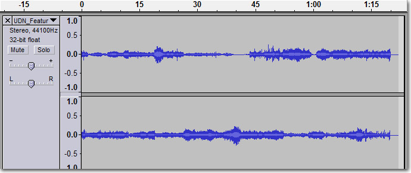
现在，通过点击那个轨迹的 按钮来删除原始的轨迹。 现在，从 File(文件) 菜单中选择 Export As WAV(导出为WAV) ，选择位置及文件名，并按下 Save(保存) 来把剪辑的音频保存到文件中。如果您还需要回到原始的捕获音频做一些处理，那么请给这个文件使用不同的名称，以便您仍然具有那个原始的完整的捕获的音频。合成帧和声音
为了把图片帧合成到单独的视频文件中，并且为了把捕获的音频和视频相融合，现在将需要一个合成或视频编辑程序。有很多的视频编辑套件；大部分都是非常昂贵的。一个好的非线性的编辑程序对于把视频组合到一起是非常合适的，因为它允许您把音频和视频分别地放置到时间轴上，并且允许您任意拖拽它们使它们相匹配。但是，一个简单的免费的替换方法是使用VirtualDub软件。这是一个强大的合成应用程序，它将会做我们所需要做的一起事情，包括把我们的图像序列和音频合成到一个单独的视频文件中，并且如果稍后您愿意这样处理那么甚至可以使用各种编解码器来对视频进行编码。 首先，确保您安装了VirtualDub 。您可以从这里下载它。 一旦安装好后，运行该程序。 从 File(文件) 菜单中，选择 Open Video File(打开音频文件) 。在出现的文件对话框中，定位并选择渲染的帧序列中的第一个图片，在这个示例中是 MoveiFrame00003.bmp 。
从 File(文件) 菜单中，选择 Open Video File(打开音频文件) 。在出现的文件对话框中，定位并选择渲染的帧序列中的第一个图片，在这个示例中是 MoveiFrame00003.bmp 。
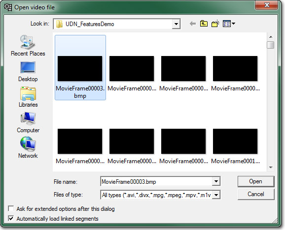
点击 Open(打开) 并把整个的序列加载到VirtualDub中。您可以滑动整个时间轴确认是否完全加载。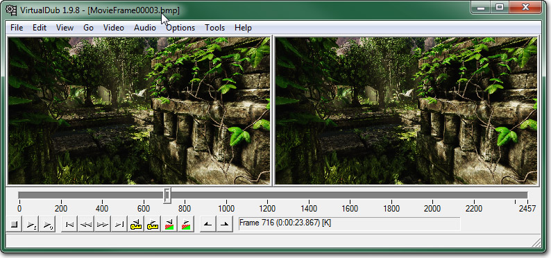
现在，在 Audio(音频) 菜单下，选择 Audio from another file(来自另一个文件中的音频) 。找到并选择剪辑的音频文件，然后点击 Open(打开) 来加载它。 您可以在VirtualDub中播放视频，并查看您的音频此时是否和视频相对齐。如果它没有和视频对其匹配，那么您或许需要在Audacity中对其进一步的编辑，使其正确。 Audio(音频)应该已经设置为 Direct Stream Copy(直接流复制) 。这意味着不执行压缩或其它操作。它简单地从那个文件把音频复制到新的保存的视频文件中。但是，视频将需要使用 Full processing mode(完全处理模式) ，这是默认模式。压缩设置默认也是创建未压缩的视频文件，这正是我们所需要的，所以这些设置是非常好的。 当您准备保存视频文件时，请从 File(文件) 菜单中选择 Save as AVI(保存为AVI) 。为这个文件选择一个存放地址并命名，然后点击 Save(保存) 。这是将会出现状态窗口为您显示转换过程。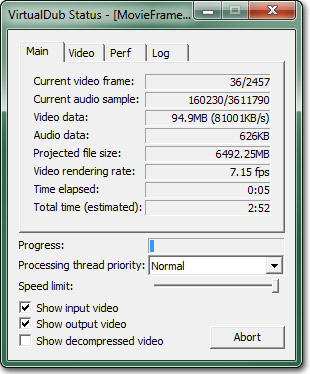
当这个处理过程完成后，您可以定位并播放那个视频文件，假设您的PC可以处理它，因为此时它还是未压缩的格式。现在如果您想把视频压缩为更加容易管理的大小，那么您可以跳到Encoding(编码)部分。实时捕获
软件捕获
屏幕捕获软件是捕获镜头片段的一种划算的方法。有很多免费的应用程序允许您从您的游戏中直接捕获音频或视频到一个视频文件中。某些应用程序甚至有一些附加功能：在捕获时将视频编码为特定格式的、在捕获完成后把视频转换为其它格式甚至直接从软件中把视频上传到Youtube或其它的视频网站中。 屏幕捕获软件的一个主要缺点是软件会使用处理器来进行它所需要的处理。除非您在一个非常强大的系统上运行游戏和软件，否则会在捕获高分辨率的视频时出现丢帧的现象。这对于内部视频来说可能是可以接受的，但是对于用于宣传目的视频来说，这些视频要为大众或媒体展示，那么在视频中出现任何显著的停顿、动画跳跃等现象都是令人难以接受。 Camtasia 是一个具有大量功能的专业的屏幕捕获软件。它可以做很多您想做的事情，只要这些事情是和捕获的镜头片段相关的。但是这些功能都需要付出昂贵的金钱代价，所以这也是您需要记住的。免费的可替换Camtasia 的软件是CamStudio。它是一个开源项目，和Camtasia的录像机非常类似，几乎是用了同样的界面。当在经费紧张的情况下开发游戏时，这是一个很好的可替换的方法。因此，在讲述使用屏幕捕获软件捕获镜头片段的过程时我们主要使用这个软件。 请确保您已经安装了CamStudio。您可以从 这里下载它。 一旦安装后，打开CamStudio。 在 Region(区域) 菜单中，选择 Region(区域) 。这允许我们在准备进行录制时指出要进行捕获的区域。
在 Region(区域) 菜单中，选择 Region(区域) 。这允许我们在准备进行录制时指出要进行捕获的区域。
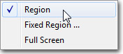
从 Options(选项) 菜单中选择 Video Options（视频选项） 来打开 Video Options(视频选项 ) 对话框。选择您想选择的压缩器。我们保留它为 Microsoft Video 1 ，并把 Quality(质量) 一直提升到 100 。在 Framerates(帧频率) 下，设置 Capture Frames Every(捕获每帧时间) 为 33毫秒，并设置 Playback Rate(播放速率) 为30帧/秒。这应该允许您每秒钟捕获30帧，而不是默认的每秒钟捕获200帧。 您或许可以获得 _Record audio from speakers(从扬声器录制音频) 选项来在您的系统上工作；但是，当它和 Windows 7机器系统工作时会有一些问题，所以我们将使用一个替换的方法来设置扬声器作为麦克风使用。
在Windows中，打开音频 Recording(录制) 设备。
您或许可以获得 _Record audio from speakers(从扬声器录制音频) 选项来在您的系统上工作；但是，当它和 Windows 7机器系统工作时会有一些问题，所以我们将使用一个替换的方法来设置扬声器作为麦克风使用。
在Windows中，打开音频 Recording(录制) 设备。
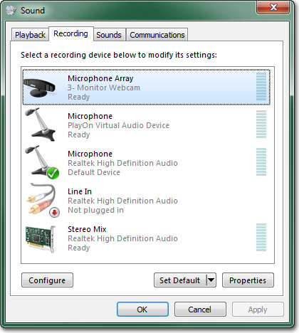
找到您的声音设备，在这个示例中是 Stereo Mix (Realtek High Definition Audio) ，并选择它。如果您发现没有列出您的声音设备，那么右击并确保启用了 Show Disable Devices(显示禁用设备) 和 Show Disconnected Devices(显示未连接设备) 。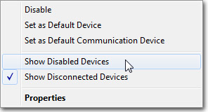
设置选中的声音设备为默认设备。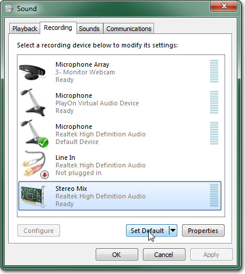
按下 https://udn.epicgames.com/pub/Three/CapturingCinematicsAndGameplayCH/cam_properties_button.jpg来为您的声音设备打开属性对话框。选择 listen(监听) 标签并设置 Playback through this device(通过这个设备播放) 指向您的扬声器。 点击 OK(确定) 并关闭对话框。返回到CamStudio，从 Options (选项)> Audio Options(音频选项) 菜单选择 Audio Options for Microphone(麦克风的音频选项) 。
点击 OK(确定) 并关闭对话框。返回到CamStudio，从 Options (选项)> Audio Options(音频选项) 菜单选择 Audio Options for Microphone(麦克风的音频选项) 。
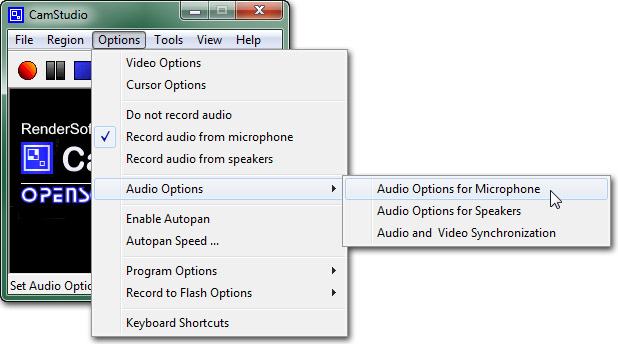
设置 Audio Capture Device(音频捕获设备) 指向您的声音设备。 设置 Recording Format(录制格式) 为 44.1 kHz, stereo, 16-bit(44.1赫兹、立体声、16-位) 。
设置 Recording Format(录制格式) 为 44.1 kHz, stereo, 16-bit(44.1赫兹、立体声、16-位) 。
 确保在 Options(选项) 菜单中选择 Record audio from microphone(从麦克风录制音频) 选项。
确保在 Options(选项) 菜单中选择 Record audio from microphone(从麦克风录制音频) 选项。
 现在CamStudio已经设置好了，并准备捕获视频。使用您要捕获的地图启动虚幻引擎。然后按下
现在CamStudio已经设置好了，并准备捕获视频。使用您要捕获的地图启动虚幻引擎。然后按下 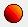
按钮。在您选择好录制区域之前录制操作将不会开始。点击虚幻引擎视口的左上角并拖拽到右下角。在拖拽过程中您可以看到您已经选择的区域的大小。 一旦选择完成后，录制操作马上开始，您应该触发您想录制的过场动画或者启动游戏性。当您完成录制时，您可以通过按下 https://udn.epicgames.com/pub/Three/CapturingCinematicsAndGameplayCH/cam_stop_button.jpg按钮来停止录制。 然后将会为要求您为要保存的视频选择一个文件名。
一旦选择完成后，录制操作马上开始，您应该触发您想录制的过场动画或者启动游戏性。当您完成录制时，您可以通过按下 https://udn.epicgames.com/pub/Three/CapturingCinematicsAndGameplayCH/cam_stop_button.jpg按钮来停止录制。 然后将会为要求您为要保存的视频选择一个文件名。
 视频要花费一点时间进行处理，然后将会在CamStudio播放器中打开它以便您可以预览捕获的视频。
视频要花费一点时间进行处理，然后将会在CamStudio播放器中打开它以便您可以预览捕获的视频。
 如果您对结果不满意，那么您可以执行另一次视频捕获。或者如果您需要编辑视频的某个部分，那么您可以把视频放到视频编辑程序中，进行适当的编辑。
如果您对结果不满意，那么您可以执行另一次视频捕获。或者如果您需要编辑视频的某个部分，那么您可以把视频放到视频编辑程序中，进行适当的编辑。
硬件捕获
硬件捕获是指使用硬件捕获卡或者系统来捕获音频及视频输出。这种方法相对于软件屏幕捕获来说有明显的优势，因为它不依赖于运行在同一台PC上的软件，该软件必须 获取 和/或 编码 视频及音频，从而会占用大量的资源。硬件捕获是一种获得人类控制的实时游戏性的高质量的视频及音频的一个很好的方法。 和其它方法一样，也有一个缺点。这缺点具有两面性。一个是，您仍然需要一个可以按照您期望的分辨率及帧频率播放游戏的系统。您甚至需要两个系统，以便所有的捕获操作完全地在一个单独的机器上进行。第二个缺点是价格。专业的捕获卡和系统可能是非常昂贵的。那也就是说这是物有所值的。 有很多可用的硬件解决方案。目前，Epic使用 Aja IO主办来捕获直接的HDMI，这避免了额外的视频处理。编码
| Format | 视频 | 音频 |
|---|---|---|
| SD (640x480) | 2000 kbps | 320 kbps / 44.100 kHz |
| SD (863x480) | 3000 kbps | 320 kbps / 44.100 kHz |
| HD (1280x720) | 5000 kbps | 320 kbps / 44.100 kHz |
 点击工具条上的 按钮，然后从菜单中选择 Video File(视频文件) 。
点击工具条上的 按钮，然后从菜单中选择 Video File(视频文件) 。
 定位并选择视频文件进行解码。设置编码后的文件的存放位置。
定位并选择视频文件进行解码。设置编码后的文件的存放位置。
 现在，您需要设置endocding(编码)属性。一个较好的起始点是使用面板右侧的其中一个 Presets(预制) 。在 Regular(普通) 下面的 normal(正常) 应该是修改某些属性的稳固的起始点。
首先，您需要决定目标视频的分辨率。如果目标视频的大小和原始视频一样，那么您可以预留 Anamorphic（失真） 设置为 Strict(严格） 。否则，设置它为 None(空) ，然后设置编码视频的 Width(宽度) 和 Height(高度) 。
现在，您需要设置endocding(编码)属性。一个较好的起始点是使用面板右侧的其中一个 Presets(预制) 。在 Regular(普通) 下面的 normal(正常) 应该是修改某些属性的稳固的起始点。
首先，您需要决定目标视频的分辨率。如果目标视频的大小和原始视频一样，那么您可以预留 Anamorphic（失真） 设置为 Strict(严格） 。否则，设置它为 None(空) ，然后设置编码视频的 Width(宽度) 和 Height(高度) 。
 选择 Video(视频) 标签。这里，您可以设置编码所使用的编码解码器。应该已经选择了h.264。如果还没有选择，那么选择它。在 Quality(质量) 的下面，有一些方法。它们是：
选择 Video(视频) 标签。这里，您可以设置编码所使用的编码解码器。应该已经选择了h.264。如果还没有选择，那么选择它。在 Quality(质量) 的下面，有一些方法。它们是：
- Target Size(目标大小) - Handbrake将会尝试编码视频，以便使得得到的视频接近于该数值(MB)。该值越低，那么视频质量越糟糕。
- Avg Bitrate(平均位率) - Handbrake将会使用输入的位率编码视频。该值越高，那么获得质量越好，文件大小越大。这将会在编码后的视频上具有不变的位率。
- Constant Quality(不变的质量) - Handbrake将会调整位率来确保到达选择的期望的质量级别。质量越高，一般文件的大小越大。这将会在编码后的视频上具有变化的位率。
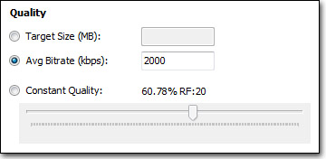
选择 Audio(音频) 标签，然后从列表中选择Track 1(轨迹1)。修改 mixdown（混音） 为 Stereo(立体声) ，修改 Samplerate(样本率) 为 44.1 ，修改 Bitrate(位率) 为所允许的最高值 160 ， 现在视频准备好编码了。按下 https://udn.epicgames.com/pub/Three/CapturingCinematicsAndGameplayCH/handbrake_start.jpg按钮来开始编码。这将会出现编码控制台窗口。
现在视频准备好编码了。按下 https://udn.epicgames.com/pub/Three/CapturingCinematicsAndGameplayCH/handbrake_start.jpg按钮来开始编码。这将会出现编码控制台窗口。
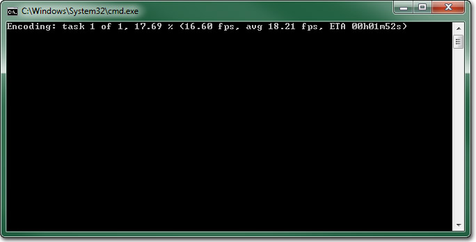
编码过程所占用的时间过程是由编码设置、进行编码的机器的处理能力以及视频的长度决定的。但是，对于较短的视频应该不会花很长的时间。如果您由于任何原因想中断编码过程，那么简单地按下 https://udn.epicgames.com/pub/Three/CapturingCinematicsAndGameplayCH/handbrake_stop_button.jpg按钮即可。 一旦编码过程结束，您可以定位编码后的视频，并播放它来测试质量。如果您不满意，那么简单地调整编码设置然后再次启动该过程即可。